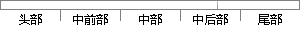

P(x|γ_n )P(γ_n ) ) （5-1）
片段位置图

相似结果|
相似片段 1：从图中可以看出：1）图 5-1（a）所得的路径信息与图 5-1（d）相比不太完整，且整体路径不平滑。图 5-1（b）所得的路径信息与图 5-1（a）相比更完整，且整体路径更平滑。图 5-1（c）因
相似片段 2：对比结果如图 5.28-5.39所示。（1）利用公式（5-1）拟合曲线，如图 5.28-5.33所示。计算值拟合值图 5.28 V=3.651，ω=1.8，对纵荡模型中 Fx的拟合(5-1
相似片段 3：我们可以向前分解一步，理解成最终成像 5-1 (f)是原始图 5-1 (a)与图 5-1 (e)（遮光板）形成的“遮挡”效应。图 5-1 (e)是一个二值图像，只分黑白两色，白色部分对应“透”光部分
相似片段 4：在图 5-1 中，选取 r1 = 0.8, r2 = 0.1，a11 = 0.4，a12 = 0.4，a21 = 0.3，a22 = 0.3，τ1 = 3, τ2 = 4.然后令 ? = 0.24
相似片段 5：而附加系Ⅱ-5-1的仅叶尖出现细微的萎蔫，整体与抗旱对照小麦晋麦47保持一致（图2.2d）。说明Ⅱ-5-1具有一定的苗期抗旱性。图 2.2 小麦-冰草 7P二体附加系Ⅱ-5-1和小麦 Fukuho
相似片段 6：果与分析5.3.1 碳层-硫-乙炔黑复合材料的形貌素面扫描图显现在图 5-1 中。图 5-1（a）和图 5-1（b）呈现了乙炔黑的表面形貌，在图 5-1（a）中，乙炔黑是由颗粒组成，乙炔黑颗粒较分散地
相似片段 7：)22)?ê3)224?ê??????·????í????????·???+5-1
相似片段 8：?? ?? ?? ?×+)- ??????%??????1)22)?ê3)224?ê??????·????í????????·???+5-1???ú???é·????§????%)22,%)#*$6
相似片段 9："#$%&’$( I-1%9875801%*’44101(91%/15&11(%5-1%&1,5%2(*%5-1%12,5%,-$&,%’(%9875801%$4%72(#82#1%2
相似片段 10： 5-01 0 5-1 2 0 5-1 8 0 5-1 9 0 5-2 9 0 6-28 07-01 0 7-062 王子 A dRem 达尔文杂交 04-1 6 04-28 0 5-1 3 0 5-1 7
|
※ 片段修改建议 ※
近似词参考：